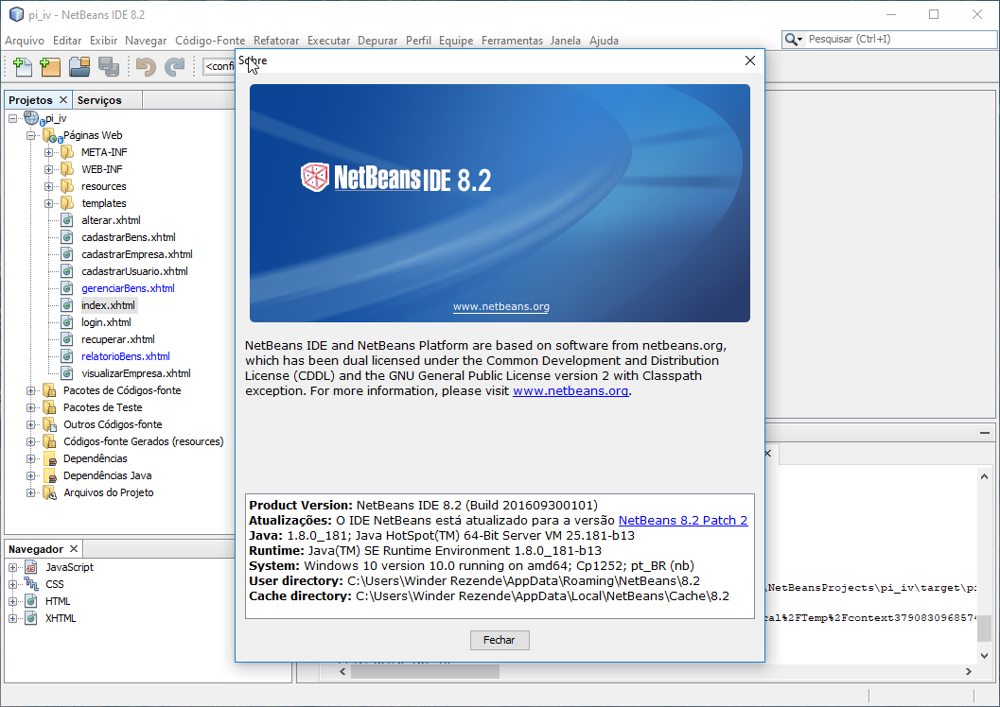
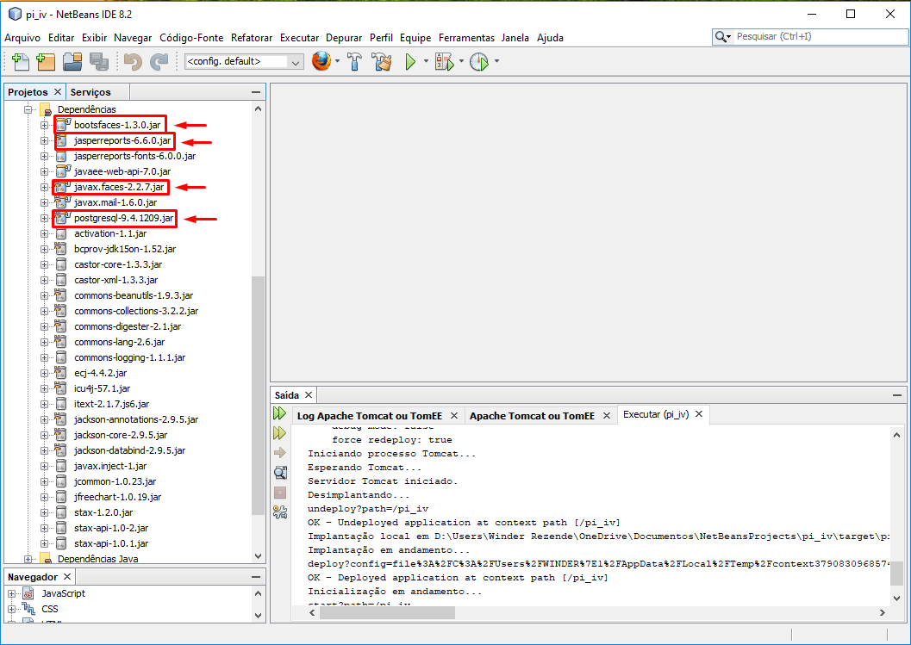
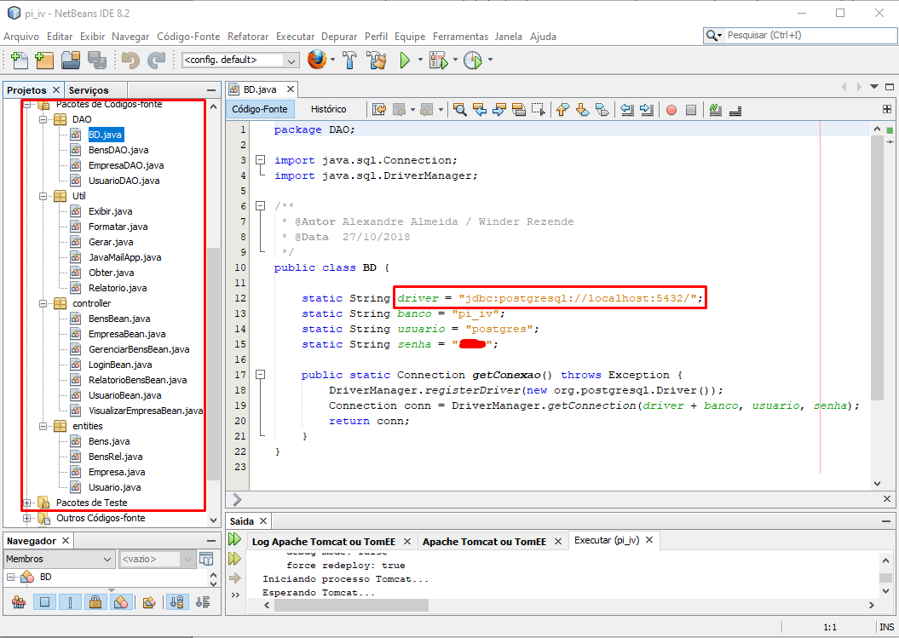

Integrantes do Projeto Integrador:
Alex Carlos,
Alexandre Silva,
Lúcio de Souza Torres,
Winder Rezende
Programação para internet ou Desenvolvimento web é o termo utilizado para descrever o desenvolvimento de sites, seja para Internet ou numa intranet. Este é o profissional que trabalha desenvolvendo websites, podendo ser um Web Designer (Desenvolvedor do Layout), ou Web Developer(Desenvolvedor de sistemas). O desenvolvimento refere-se a um processo de construção e testes do software especifico para a web, com a finalidade de se obter um conjunto de programas, que satisfazem as funções pretendidas, quer em termos de usabilidade dos usuários ou compatibilidade com outros programas existentes. O desenvolvimento web pode variar desde simples páginas estáticas a aplicações ricas, comércios eletrônicos ou redes sociais.
Conforme proposto na disciplina de Programação para Internet foi desenvolvida uma aplicação para internet que utiliza a especificação JavaServer Faces, o ambiente de desenvolvimento integrado escolhido foi o NetBeans IDE. O código fonte da aplicação foi hospedado no GitHub no endereço https://github.com/almeidasa/pi_iv com todo progresso de desenvolvimento.
Como pode ser visto nas dependências do projeto na imagem abaixo foi utilizado o Jarper Reports para emissão de relatórios e o framework foi o bootsfaces, disponível gratuitamente em: https://www.bootsfaces.net/. Este framework possui uma vasta documentação onde é demostrado sua utilização, disponível em: https://showcase.bootsfaces.net/.
O SGBD utilizado foi o PostgreSQL com integração feita pela API JDBC e obedecendo os padrões MVC e DAO.
As capturas de tela do software estão disponiveis na disciplina de Contabilidade Gerencial.